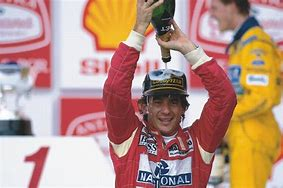

Ayrton Senna fue un piloto brasileño de Fórmula 1 considerado uno de los más grandes en la historia del automovilismo. Nació en São Paulo en 1960 y desde joven mostró un talento extraordinario para el karting, lo que lo llevó a competir en Europa y rápidamente ascender a las categorías más altas del automovilismo mundial.
Debutó en la Fórmula 1 en 1984 y se destacó por su habilidad bajo condiciones difíciles, especialmente en lluvia. Ganó tres campeonatos mundiales con McLaren (1988, 1990 y 1991), y se hizo famoso por su enfoque meticuloso, su intensidad al volante y su rivalidad con otros grandes pilotos, como Alain Prost.
Senna falleció trágicamente en 1994 durante el Gran Premio de San Marino, en un accidente que marcó un antes y un después en la seguridad de la Fórmula 1. Su legado vive no solo en sus logros deportivos, sino también en su impacto humano y en las mejoras en seguridad que ayudó a impulsar con su muerte.
